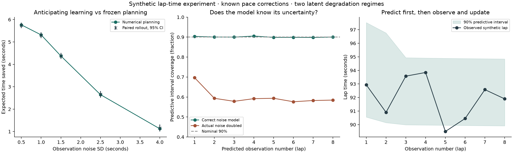

Research prototype / experiment 02
Learning tyre behaviour from noisy lap times
The controller now sees a measured lap time and updates its belief using a Gaussian observation model. It asks whether the next observation could change a later pit decision.
Synthetic policy results. The two degradation regimes and known pace corrections remain simplifying assumptions. Historical data below is a feasibility pilot, not validation of these time savings.
Next: the first held-out race test · Experiment 01: binary signals · Download experiment results · Export figure
How much does observation quality matter?
Gain compares two policies that both update after observed laps. Only one anticipates future learning. Rollouts use 20,000 paired synthetic trajectories; intervals describe Monte Carlo uncertainty under the assumed model.
Watch the belief update
Illustrative eight-lap observation sequence with true low degradation. This trace keeps observing regardless of pit decisions. Baseline, fuel and track corrections are synthetic and known exactly.
Prediction intervals are computed before observing each lap. Future observations never enter earlier updates.
Calibration and independent checks

Source: continuous-laps-v0.2 synthetic experiment. Coverage uses 10,000 independent sequences. The doubled-noise case deliberately violates the model. All results are conditional on the stated assumptions.
The next research hurdle
In real data, fuel burn, track evolution, warm-up, traffic and tyre degradation all affect lap time. Within a stint, tyre age and race lap advance together, so a fitted slope alone cannot separate their effects. Next we need a defensible observation model with explicit assumptions and held-out predictive checks before attaching strategy claims to real races.